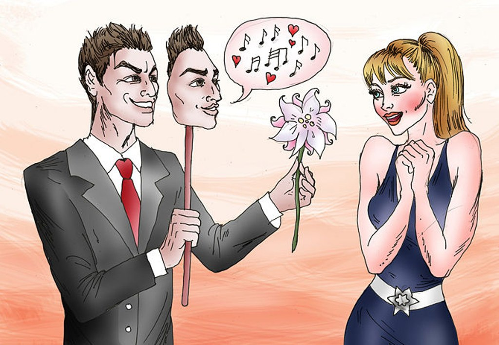
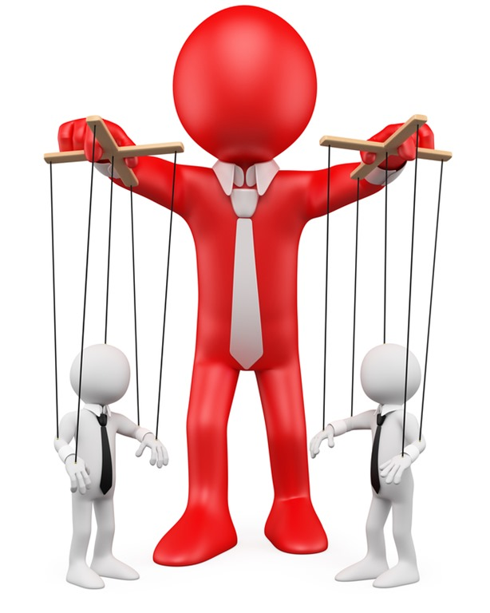

Psihopatia
-cauze și efecte-
4.Trăsături
4.1.Lipsa empatiei și a sentimentelor
Probabil cel mai definitoriu factor în caracteristicile unui psihopat este lipsa de empatie și de sentimente. Ei înțeleg emoțiile, dar nu le simt.Vor manifestă empatie doar că să te mulțumească, nu din pură înțelegere. Mult timp să crezut că psihopații nu simt tema.O simt, dar nu le pasă. Nu pot fi complet onești, foarte bucuroși și se uită la dragoste cu lipsa de respect. Furia poate să apară de nicăieri și este foarte scurtă și intensă.Nu există legături emoționale pentru ei, ci doar legături de subordonare. Ei consideră că regulile nu sunt pentru ei.Vină nu are sens pentru ei și sunt chiar dispuși să întoarcă situația în favoarea lor făcându-te să crezi că tu ești cel vinovat. Studii recente au arătat că psihopații au un "întrerupător" în creier care le permite să întrerupă și să pornească emoțiile și empatie când vor ei.
4.2.Farmec superficial
În 1941 Hervey M. Cleckley a scris cartea „The Mask of Sanity” în care discuta despre 16 trăsături ale psihopatiilor, unul dintre ele fiind farmecul superficial. Psihopații își pot activă farmecul când simt că este nevoie și pot fi foarte carismatici.Au capacitatea de a-și ascunde adevărată personalitate pentru a fi cât mai plăcuți.Sunt prietenoși și le place să fie în centrul atenției.Sunt buni în conversații și tind să arate mai bine decât restul oamenilor și se folosesc de acest aspect pentru atrage cât mai multe persoane în jurul lor.Se îmbracă mai bine decât restul oamenilor și sunt excesiv de încrezători, lucru care ii face mai atractivi.
4.3.Nivel al inteligenței ridicat

Cei afectați de psihopatie își petrec o mare parte din timp adunâd informații despre comportamentul celor din jur. Cunosc foarte bine emoțiile și se bazează pe limbajul trupului pentru a-i citi pe ceilalți. Un studiu din 2015 arată că psihopații sunt atenți la anumite părți ale feței.Când cineva este vulnerabil, majoritatea persoanelor fac contact vizual, dar cineva cu psihopatie va petrece mai mult timp uitându-se la gură deoarece această zona dezvăluie mai multe informații despre ceea ce persoană simte cu adevărat.
4.4.Aroganți/narcisiști
Psihopații se cred în general mai inteligenți, mai puternici și mai valoroși ca ceilalți.Consideră că lumea se învârte în jurul lor și se văd mult mai importanți decât chiar sunt.Vor crede că opinia lor e mereu adevărată.Un individ afectat de psihopatie nu se va implică niciodată în activități care nu îi aduc ceva de câștigat.Ei investesc mai mult timp în aspectul lor deoarece înțeleg mai bine decât oricine importanța aparențelor.
4.5.Se plictisesc ușor
Psihopații au o constanța nevoie de adrenalină.Creierul lor cere mai multă dopamină decât un creier normal, de aceea este probabil că ei să aibă probleme cu drogurile. Se plictisesc foarte ușor, și pentru a scapă de această stare intră în scenarii periculoase sau caută plăcerea fizică mult mai mult decât alții. Potrivit psihologului Randall Salekin, acest lucru înseamnă că sunt, de asemenea, cei dintr-un grup care cel mai probabil să inițieze activități orientate spre distracție.
4.6.Manipulativi
Știu mereu de ce sfori să tragă și ce metode să utilizeze, psihopații folosesc decepția pentru a-i înșela pe ceilalți și a-i face să gândească sau să se comporte într-un anumit fel. Ei se concentrează doar pe câștigul personal, fără nici o preocupare pentru felul în care se simt ceilalți. Un psihopat nu poate trăi în singurătate, acesta are nevoie constanța de victime noi de care să se folosească.Sunt bucuroși când reușesc să păcălească pe cineva și sunt șocați dacă o persoană vreo să îi părăsească.
4.7.Comportament imprudent
Comportamentul impulsiv și iresponsabilitatea este stilul lor de viață.Un psihopat nu și-ar admite niciodată greșelile. De fapt, întorc masele împotriva oricui îi acuză de ceva astfel încât cel care acuză să se gândească din nou, ba chiar să se simtă vinovat pentru plângerile sale. Au temperament greu de controlat, sunt imprudenți, lipsiți de rabdare, agresivi și nu au regrete. Deși nu toți indivizii afectați de psihopatie prezintă acte de violență, există o înclinație înspre agresivitate când vine vorba despre aceștia.
4.8.Mincinoși
Cu toții mai mințim din când în când pentru a-i face pe ceilalți să se simtă bine, dar psihopații duc minciună la un alt nivel.Le place să mintă și să complice situațiile pentru a se simți superiori, fiind dispuși chiar să creeze minciuni complete despre trecutul lor, stilul lor de viață și relațiile lor.Minciunile lor au au scopul de a obține ce vor și de a ajunge cât mai sus pe scară socială. Psihopații nu prea se țin de cuvânt, ei fac ce le vine în acel moment.Ei tind să promită și să dispară în ultima secundă.